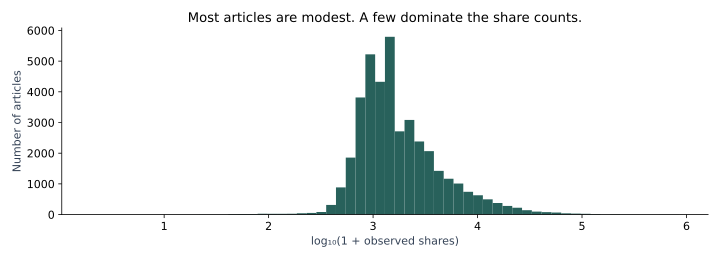
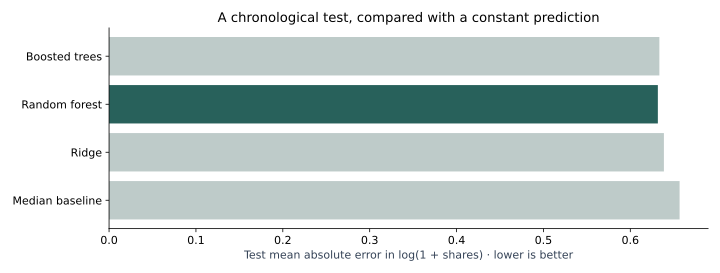
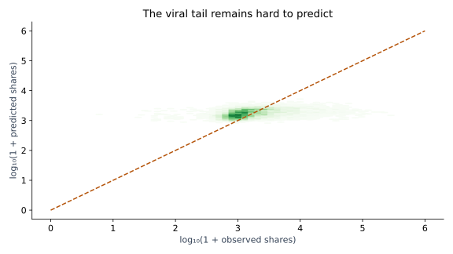

Can we tell which news will travel?
Understanding and predicting online news popularity, using article features and an honest test on later publications.
Content carries a little signal. Predicting a viral hit remains much harder.
The validation-selected random forest reduces test log error by 3.8% against a median baseline. That is a measurable but limited improvement, not a reliable forecast of virality.
A prediction question with a clear boundary.
Can article-level features improve predictions of recorded social shares over a constant baseline for later Mashable articles? One row is one article. The target is shares, the social-share count recorded by the dataset authors.
We imagine making a prediction at publication, after the article content and channel are known. Inputs are content statistics, media/link counts, sentiment, channel flags and publication weekday. We deliberately exclude historical-share summaries and original topic-model features with uncertain fitting provenance.
This is a retrospective benchmark. All labels come from a snapshot acquired on 8 January 2015: older articles have had more time to accumulate shares. The data cannot answer “how many shares after seven days?” or prove that changing a headline causes more sharing.
The data, before the model.
The UCI Online News Popularity dataset provides numerical summaries of Mashable articles, not their full text. The supplied CSV contains 39,644 articles and 61 columns: 58 candidate predictors, URL, article age and the target. The current UCI page lists 39,797 instances; we report the actual supplied file count, without silently adding or deleting rows.
| Variable group | Examples | Role |
|---|---|---|
| Content & structure | Title/content length, unique-word rates, images, videos, links | Publication-time signals |
| Context | Channel and weekday indicator variables | Publication context |
| Text summaries | Subjectivity and positive/negative polarity | Imperfect numerical text proxies |
| Outcome | Recorded social shares | Regression target |
Quality checks. URLs are unique; there are no original missing cells or negative targets. 1,181 rows have zero content tokens: these may represent extraction failures or non-text articles, so we retain them without claiming they are genuinely empty. Each of three ratio fields contains one value outside [0,1]; these cells become missing values, then receive training-fitted median imputation.
The median is 1,400 shares, the 90th percentile is 6,200, the 99th percentile is about 31,657 and the maximum is 843,300. This extreme right tail motivates the log target.

Dataset: Fernandes, Vinagre, Cortez & Sernadela (2015), doi:10.24432/C5NS3V, CC BY 4.0. Feature statistics are used under that license; article text remains owned by Mashable.
Conservative inputs. Training-only transformations.
Column names have surrounding whitespace stripped. Dates are parsed from article URLs solely for splitting; neither URLs, dates nor timedelta enter the models. No rows or viral targets are removed, no outcomes are winsorized, and there is no target-driven feature selection.
We exclude nine kw_* fields and three self_reference_* fields: their share-based histories cannot be independently verified as known at publication. We also exclude five LDA_* fields because their original corpus-fitting procedure cannot be reconstructed from these statistics. This is a conservative provenance choice, not evidence that LDA itself is leaky.
41 inputs remain. Impossible values in the three documented word-rate fields and any nonfinite predictors become missing. The imputer learns medians only from the fitting partition. Ridge additionally uses means and standard deviations learned by StandardScaler on that partition. Trees do not need scaling. Existing 0/1 indicators are retained.
Models fit z = ln(1 + shares). We invert with exp(ẑ) − 1 and clip negative predictions to zero. This emphasizes relative errors and compresses the viral tail. Inverting a mean log prediction does not estimate the raw conditional mean; raw-share forecasts can therefore be systematically low.
Start simple, then compare three families.
| Method | Core idea & reason | Fixed choices and validation grid |
|---|---|---|
| Median baseline | Constant median log-share prediction; minimizes absolute log error with no content signal | No tuning; refitted on train + validation for final test |
| Ridge regression | Linear squared log-error objective with L2 penalty; tests additive signal and assumes an approximately linear relationship | α ∈ {1, 100}; standardized inputs |
| Random forest | Average of randomized regression trees; captures nonlinearities and interactions with no linearity assumption | 150 trees; max_features=0.8; leaf size ∈ {10, 30}; seed 335 |
| Boosted trees | Sequential trees fit squared log-error residuals; captures nonlinear structure but can overfit | 150 rounds; learning rate 0.05; L2=10; leaves ∈ {15, 31}; early stopping off; seed 335 |
The learned models optimize squared error on log shares; the evaluation prioritizes absolute log error for robustness. These objectives differ, so the median baseline remains a meaningful comparator. Complexity is justified only by evidence on validation data. The full seven-run validation comparison is shown below.
Every validation trial
These training-only fits determine model selection; lower validation log MAE is better.
| Model | Candidate setting | Validation log MAE |
|---|---|---|
| Median baseline | No tuning | 0.6433 |
| Ridge | alpha=1 | 0.6060 |
| Ridge | alpha=100 | 0.6061 |
| Random forest | min_samples_leaf=10 | 0.6077 |
| Random forest | min_samples_leaf=30 | 0.6038 |
| Boosted trees | max_leaf_nodes=15 | 0.6062 |
| Boosted trees | max_leaf_nodes=31 | 0.6060 |
Let earlier articles predict later articles.
Sort the unique publication dates; the first 60% of dates form training, the next 20% validation and the last 20% test. Every article from one date stays together. Percentages describe date groups, so row proportions differ. This simulates forward use better than a shuffled split, although it does not solve unequal label-exposure times.
| Partition | Publication dates | Articles |
|---|---|---|
| Train | 2013-01-07 → 2014-03-14 | 21,892 |
| Validation | 2014-03-15 → 2014-08-05 | 8,440 |
| Test | 2014-08-06 → 2014-12-27 | 9,312 |
Each candidate fits on training only. Validation log MAE chooses the settings within each family and the overall model. After freezing those choices, each family is refitted on training + validation, including fresh preprocessing, then evaluated on the same untouched test dates. No test score chooses hyperparameters or the winning family.
Primary metric: log MAE = mean |ln(1+y) − ln(1+ŷ)|. Lower is better; for large counts, an error of ln(2) ≈ 0.693 corresponds to a factor-of-two miss. RMSLE squares log errors before averaging and penalizes large relative misses more. MAE in shares reports typical absolute magnitude on the original scale and is sensitive to viral articles. Log-space R² is also included in the results file.
A modest improvement, measured honestly.
| Model | Validation log MAE | Test log MAE ↓ | Test RMSLE ↓ | Test MAE (shares) ↓ |
|---|---|---|---|---|
| Median baseline | 0.6433 | 0.6567 | 0.9102 | 2,153 |
| Ridge | 0.6060 | 0.6387 | 0.8629 | 2,131 |
| Random forest | 0.6038 | 0.6317 | 0.8541 | 2,121 |
| Boosted trees | 0.6060 | 0.6334 | 0.8547 | 2,124 |
The random forest wins on validation (0.6038), before test evaluation. On test, its log MAE is 0.6317 versus 0.6567 for the baseline: a 3.8% relative reduction. Raw MAE improves by only 1.5%. The close learned-model scores give little support for claiming a decisive advantage of one nonlinear method.
A paired bootstrap resamples whole test publication days 2,000 times (seed 335). The 95% percentile interval for baseline-minus-forest log MAE is 0.0182 to 0.0325. Positive values favor the forest. This conditional interval reflects variation across sampled days; it does not include training variability, serial dependence between days or future distribution shifts.

The hard part is the tail.

| Observed shares | Test n | Log MAE | Median actual | Median predicted |
|---|---|---|---|---|
| Under 1,000 | 2917 | 0.755 | 784 | 1,489 |
| 1,000–9,999 | 5951 | 0.447 | 1,700 | 1,854 |
| 10,000+ | 444 | 2.292 | 17,150 | 2,032 |
For the 444 test articles with at least 10,000 shares, the median observed count is 17,150 but the median prediction is about 2,032. For low-share articles the direction reverses: predicted counts tend to be too high. Predictions concentrate around common outcomes, consistent with weak features and an unpredictable tail.
These outcome-defined bands diagnose errors after evaluation; they are not information available at prediction time. The decision explorer below shows which articles the model would promote and which popular articles it misses. Its case-table row IDs are zero-based CSV data-row indices, so the repository can trace each case without republishing article text or inventing explanations from unseen headlines.
Two contrasting failures
| CSV row ID | Observed shares | Forest prediction | What the error shows |
|---|---|---|---|
| 38633 | 5 | 1,609 | A very low-share article is pulled toward a common outcome. |
| 35256 | 284,700 | 1,507 | A viral article is severely underpredicted. |
These are deliberately selected extreme test errors, not typical cases. The aggregate error bands above describe the broader pattern. The features cannot establish why either article performed this way; headlines, promotion and audience histories are unavailable.
What this evidence does—and does not—support.
The data cover one publisher and an old social-media environment. Results do not automatically transfer to modern platforms or other publishers. Share counts are cumulative snapshots with unequal exposure durations; publication date is a split key, not a guarantee of clean prospective labels. Earlier article labels may include shares accumulated after later articles were published, so this experiment is not a true as-of-time deployment simulation.
Original text, audience size, recommendation placement, social-network structure and promotional activity are unavailable. Provided text statistics cannot be fully audited or rebuilt. Removing uncertain feature groups reduces provenance risk but does not certify every remaining extraction step. The single temporal holdout and small validation grid also limit conclusions about stability and optimality.
No causal effects, accuracy percentage, prediction intervals for individual articles or guaranteed viral-article detection are claimed. Better next steps would be fixed-horizon labels, timestamped feature histories, repeated rolling-origin validation and a separate future dataset.
We find weak but useful predictive signal relative to a simple baseline. We do not find a dependable way to forecast viral success.
Would the model choose the right articles?
Imagine an editor can promote only 10% of articles. Does ranking by predicted shares find more popular articles than choosing randomly? Change the budget and what “popular” means to see the trade-off.
Horizontal axis: share of articles promoted, ranked by model prediction. Vertical axis: share of all popular articles captured. Green: model ranking. Dashed gray: expected random selection. Orange: best possible ranking with hindsight. The marker is your chosen budget.
Inspect the shortlist and what it missed
| Row ID | Date | Channel | Predicted shares | Observed shares | Outcome |
|---|
How to read this. Precision is the fraction of promoted articles that were popular; recall is the fraction of all popular articles captured. Lift compares precision with the popularity rate of the whole selected channel. Popularity labels score the ranking after selection; they never decide which articles the model promotes.
Assumptions and limits of this interaction
This is a retrospective allocation exercise across the held-out period, assuming all candidate feature vectors are available together and each promotion costs the same. It is not a live daily scheduling policy, a new trained classifier or evidence that promotion causes extra shares. The popularity threshold changes evaluation labels, not predictions. Random selection has an expected precision equal to the popularity rate; the orange ceiling requires impossible advance knowledge of outcomes.
The constant baseline has no ranking signal, so its curve and metrics show the analytical expectation for random tie-breaking. Other tied predictions break by original row ID. Exploring these test results does not change the validation-selected model. Outcome-defined channels or thresholds should not be used to retune it.
Small gains, clear limits.
We asked whether article-level features improve predictions of recorded social shares over a constant baseline for later Mashable articles. The validation-selected random forest lowers test log MAE from 0.6567 to 0.6317, a 3.8% relative reduction, while raw-share MAE improves by only 1.5%. The paired-day bootstrap 95% interval for the absolute log-MAE improvement is 0.0182–0.0325, conditional on the fitted models and sampled test days. This supports weak predictive signal in this benchmark, while viral articles remain difficult to predict. Cumulative snapshot labels, a single publisher and unknown exposure histories limit generalization; these predictions establish no causal effects.
Tools & AI use
Python, pandas, NumPy and scikit-learn supported the analysis and model evaluation, with Matplotlib used for charts. OpenAI Codex assisted with analysis code, debugging, documentation and website presentation; Claude provided review suggestions. Reported scores come from the computed outputs; the authors remain responsible for understanding the methods and checking the results.
Code, data and the exact recipe.
Source repository and README ↗ contains the setup, full outputs, citations and documentation. The essential steps are collected below.
Data access, run commands and result files
Download the UCI Online News Popularity archive (CC BY 4.0) and save it as data/online+news+popularity.zip. Run from the repository root:
python -m venv .venv
source .venv/bin/activate
pip install -r requirements.txt
python src/analyze.py --data "data/online+news+popularity.zip"
python src/build_site.pyWindows PowerShell activation: .venv\Scripts\Activate.ps1. To preview: python -m http.server 8000 --directory docs, then open localhost:8000.
Reference environment: Python 3.13.9, NumPy 2.3.5, pandas 2.3.3, scikit-learn 1.7.2 and Matplotlib 3.10.6. Dependencies are pinned in requirements.txt.
Split the sorted unique publication dates 60/20/20, keeping all articles from a date together. Fit preprocessing on the fitting partition only; choose settings and the model on validation, then refit on training + validation before final testing. Random seed: 335.
| Partition | Publication dates | Articles |
|---|---|---|
| Train | 2013-01-07 → 2014-03-14 | 21,892 |
| Validation | 2014-03-15 → 2014-08-05 | 8,440 |
| Test | 2014-08-06 → 2014-12-27 | 9,312 |
CSV SHA-256: b66d9088632308cc27fa35af847650d174a5a50503987c4e511de94a99d1c218
| Result file | What it records |
|---|---|
| results/summary.json | Complete run summary, environment and checksum |
| results/metrics.csv | Final metrics and selected settings for every model |
| results/validation_trials.json | Every candidate setting and validation log MAE |
| results/splits.csv | Original row ID, publication date and exact split |
| results/test_predictions.csv | Held-out outcomes and predictions for all models |
| results/largest_errors.csv | Largest selected-model absolute log errors |
| results/feature_manifest.json | Included and excluded columns |
The executable analysis and a notebook are in src/ and notebooks/. No additional unreported model experiments are claimed.
Sources and software
Dataset and feature definitions: Fernandes, Vinagre, Cortez & Sernadela (2015), UCI Online News Popularity, CC BY 4.0. Method implementations: scikit-learn 1.7; data handling: pandas and NumPy; figures: Matplotlib. Full references are in the repository CITATIONS.md.